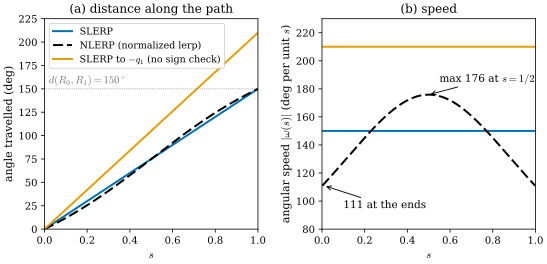
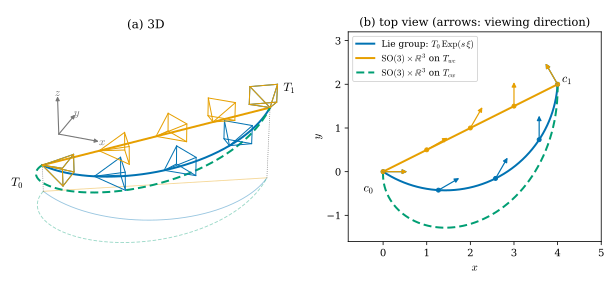
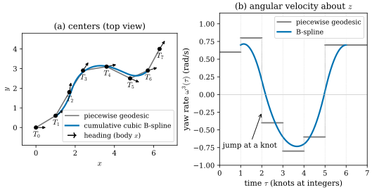

28.4 Interpolating and Averaging Poses
Goals
- SLERP가 \(S^3\)과 \(\mathrm{SO}(3)\)의 geodesic을 일정한 각속도로 따라가는 보간임을 설명하고, quaternion의 부호를 골라야 하는 이유를 double cover로 말할 수 있다.
- \(\mathrm{SE}(3)\)의 Lie group 보간(screw)과 \(\mathrm{SO}(3) \times \R^3\) 보간의 카메라 중심의 path를 비교하고, \(\mathrm{SE}(3)\)에 bi-invariant metric이 없다는 사실로 “올바른 보간”이 metric과 규약의 선택에 달렸음을 설명할 수 있다.
- Lie group 위의 cumulative B-spline을 정의하고 local support와 \(C^2\) 성질, rolling shutter와 IMU에서의 쓰임을 말할 수 있다.
- chordal \(L_2\), geodesic \(L_2\)(Karcher), geodesic \(L_1\) rotation 평균을 계산하고 outlier에 대한 성질과 유일성 조건을 비교하며, multiple rotation averaging의 cycle consistency를 설명할 수 있다.
Prerequisites
- Remark 0.8.4: \(\mathrm{SO}(3)\)의 bi-invariant metric과 geodesic \(R\exp(t[\omega]_\times)\). Section 0.8의 상자: Fréchet(Karcher) mean과 그 반복
- Section 28.1: screw motion(Example 28.1.4), adjoint (28.1.8), \(T_{cw}\)와 \(T_{wc}\)
- Section 28.2: double cover와 반각 (28.2.8). Section 28.3: pose graph (28.3.5), gauge, nerfstudio의 두 모드(Section 28.3)
- Section 29.4: metric을 고르면 보간과 평균의 답이 바뀐다는 예(\(\mathrm{SPD}(3)\))
Motivation
Section 28.3의 끝에서 nerfstudio의 두 pose 보정 모드가 \(0\)에서 같은 differential을 가지지만 2차부터 다르다는 것을 보았다. parameter 공간의 직선이 카메라 중심의 직선으로 가느냐, 휜 곡선으로 가느냐의 차이였다. 이 절은 그 질문을 정면으로 다룬다. 두 pose 사이를 “곧게” 잇는다는 것은 무엇인가?
3D vision에서 보간과 평균은 흔한 일이다. 새 시점 렌더링을 위한 카메라 궤적, 프레임 사이의 pose(rolling shutter의 행마다 다른 시각), keyframe의 pose를 여러 측정에서 합치는 일, SfM의 초기화에서 상대 회전들로 절대 회전을 구하는 일이 그렇다. Section 29.4에서 covariance의 보간과 평균이 metric의 선택에 따라 달랐듯이, pose에서도 답은 기하가 정한다. 질문은 넷이다.
- 두 회전 사이의 SLERP는 왜 “올바른” 보간이고, quaternion의 부호는 왜 골라야 하는가?
- 두 pose 사이의 보간은 왜 여러 개이고, 카메라 중심은 각각 어떤 path를 지나는가?
- 여러 pose를 매끄럽게 잇는 연속 시간 궤적은 어떻게 만드는가?
- 여러 회전의 평균은 무엇이고, outlier가 있으면 어떻게 달라지는가?
SLERP Is the Geodesic
unit quaternion \(q_0, q_1\) 사이의 각을 \(\psi = \arccos\inner{q_0}{q_1} \in (0, \pi)\)라 하면, Shoemake의 SLERP는
이다 [Shoemake85]. 이것은 \(q_0\)과 \(q_1\)을 지나는 \(S^3\)의 great circle을 일정한 속력으로 따라가는 곡선, 곧 unit sphere의 geodesic이다((0.8.5)의 \(\exp_p\)를 \(S^3\)에서 쓴 것).
Proposition 28.4.1 (SLERP is the geodesic of \(\mathrm{SO}(3)\)).
\(\inner{q_0}{q_1} \ge 0\)이면 \(R\big(\mathrm{SLERP}(q_0, q_1; s)\big) = R_0\,\mathrm{Exp}\big(s\,\mathrm{Log}(R_0^{\mathsf T}R_1)\big)\)이다. 이것은 bi-invariant metric(Remark 0.8.4)의 최단 geodesic이고, 각속도의 크기는 \(d(R_0, R_1)\)로 일정하다. \(\inner{q_0}{q_1} \lt 0\)이면 SLERP는 같은 축 둘레로 반대쪽, 곧 각 \(2\pi - d(R_0, R_1)\)만큼 도는 geodesic을 지난다. 그래서 구현은 \(\inner{q_0}{q_1} \lt 0\)일 때 \(q_1\)을 \(-q_1\)로 바꾼다(Eigen의 Quaternion::slerp가 그렇게 한다).
Derivation. \(q_0 = (1, 0)\)이라 두어도 된다(왼쪽에서 \(\bar q_0\)를 곱하는 것은 \(S^3\)의 isometry이고 \(\mathrm{SO}(3)\)에서는 \(R_0^{\mathsf T}\)를 곱하는 것이다). 그러면 \(q_1 = (\cos\psi, \sin\psi\,n)\)이고 (28.4.1)은 \(\big(\cos(s\psi), \sin(s\psi)\,n\big)\)이다. (28.2.8)에 의해 이것은 \(\mathrm{Exp}(2s\psi\,n)\)이고, \(\psi \le \pi/2\)(곧 \(\inner{q_0}{q_1} \ge 0\))이면 \(2\psi = d(R_0, R_1) \le \pi\)이므로 \(\mathrm{Exp}\big(s\,\mathrm{Log}(R_1)\big)\)와 같다. \(\psi \gt \pi/2\)이면 회전각 \(2\psi \gt \pi\)를 같은 방향으로 돌게 된다.

Figure 28.4.1의 (a)에서 세 곡선은 모두 \(s = 1\)에서 같은 회전 \(R_1\)에 도착한다. 그러나 파랑과 검정은 150°, 주황은 210°를 돌았다. (b)를 보면 차이가 더 분명하다. SLERP의 각속도는 수평선이다. NLERP는 quaternion의 직선을 sphere로 정규화한 것이라 sphere 위에서 가운데가 빠르고, 회전각 150°에서 속도 차이가 1.6배다(\(2\tan 37.5^\circ/\sin 75^\circ\)). 회전각이 작으면 두 방법의 차이는 작아서, 작은 회전 사이의 보간에는 NLERP를 쓰기도 한다. 주황 수평선은 일정한 속도지만 먼 길이다. \(q_1\)과 \(-q_1\) 가운데 \(q_0\)와 같은 hemisphere에 있는 쪽을 골라야 \(\mathrm{SO}(3)\)의 짧은 geodesic이 된다.
Verification: verify/v-28-4-interpolating-averaging.py
Interpolating Poses: Which Path Is Straight?
pose \(T_0, T_1\)(camera-to-world \(T_{wc}\)) 사이를 잇는 자연스러운 방법은 셋이다. 회전 부분은 셋 모두 SLERP로 같다.
(i)은 Example 28.1.4의 screw motion을 \(T_0\)에서 출발시킨 것이다. (ii)는 카메라 중심을 직선으로 옮긴다. (iii)은 world-to-camera pose의 translation을 직선으로 옮기는데, 그 translation은 카메라 중심이 아니므로(Section 28.1의 상자) 중심 \(c(s) = -R_{cw}(s)^{\mathsf T}t_{cw}(s)\)는 직선이 아니다.

Figure 28.4.2의 (b)에서 세 중심 path를 비교하자. 주황은 \(c_0\)에서 \(c_1\)으로 곧게 간다. 파랑은 먼저 \(-y\) 쪽으로 내려갔다가 돌아 올라온다. 카메라가 \(120^\circ\) 도는 동안 원점이 screw axis 둘레를 도는 helix 조각을 그리기 때문이다(Figure 28.1.1). 초록은 더 크게 휜다. 화살표를 보면 파랑과 주황의 보는 방향은 같은 \(s\)에서 같다. (a)의 frustum도 같은 것을 3D로 보여 준다. 같은 \(s\)의 파란 frustum과 주황 frustum은 방향이 같고 위치만 다르며, 바닥의 흐린 그림자가 (b)의 세 path다. 세 방법의 차이는 오직 중심이 어디를 지나느냐다. 그렇다면 어느 것이 “올바른” 보간인가? \(\mathrm{SO}(3)\)에서는 bi-invariant metric의 geodesic이 답이었다. \(\mathrm{SE}(3)\)에는 그런 metric이 없다.
Proposition 28.4.2 (no bi-invariant metric on SE(3)). \(\mathrm{SE}(3)\)에는 left translation과 right translation 모두에 대해 불변인 Riemannian metric이 없다. \(\mathrm{Sim}(3)\)도 마찬가지다.
Derivation. bi-invariant metric \(g\)가 있다고 하자. \(X \in \mathfrak{se}(3)\)과 \(T \in \mathrm{SE}(3)\)에 대해 left-invariance로 \(g_T(TX, TX) = g_I(X, X)\)이고, \(TX = (TXT^{-1})T\)이므로 right-invariance로 \(g_T(TX, TX) = g_I(TXT^{-1}, TXT^{-1})\)이다. 따라서 \(g_I\)는 모든 \(\mathrm{Ad}_T\)에 대해 불변인 inner product다. 그런데 \(T = (I_3, t)\)이면 (28.1.8)에서 \(\mathrm{Ad}_T(0, \omega) = (t \times \omega, \omega)\)이다. \(\R^6\)의 inner product는 모두 Euclidean norm과 동치이므로 어떤 \(c \gt 0\)에 대해 \(g_I(Y, Y) \ge c\abs{Y}^2\)인데, \(\omega \ne 0\)을 고정하고 \(t \perp \omega\)의 길이를 키우면 \(Y = \mathrm{Ad}_T(0, \omega)\)에 대해 \(g_I(Y, Y) \ge c\abs{t \times \omega}^2 = c\abs{t}^2\abs{\omega}^2 \to \infty\)가 되어, 일정한 값 \(g_I((0, \omega), (0, \omega))\)와 같을 수 없다. \(\mathrm{Sim}(3)\)은 같은 translation을 포함하므로 같은 논증이 된다. \(\mathfrak{se}(3)\)에도 \(\mathrm{Ad}\)-invariant인 symmetric bilinear form은 있다. 그 전체는 \(\big((v, \omega), (v', \omega')\big) \mapsto a\inner{\omega}{\omega'} + b\big(\inner{\omega}{v'} + \inner{v}{\omega'}\big)\)의 2차원이고(verify), 모두 translation끼리의 블록에서 \(0\)이므로 positive definite일 수 없다. 그러나 \(b \ne 0\)이면 nondegenerate이고 signature가 \((3, 3)\)이다(양의 eigenvalue 셋, 음의 eigenvalue 셋). 그래서 \(\mathrm{SE}(3)\)에는 positive definite 대신 nondegenerate만 요구하는 bi-invariant pseudo-Riemannian metric(준리만 계량)은 있다. 없는 것은 positive definite인 것, 곧 Riemannian metric이고, 위 논증이 positive definiteness(\(g_I(Y, Y) \ge c\abs{Y}^2\))를 쓴 곳이 바로 그 차이다.
bi-invariance가 안 되면 한쪽만 고른다. 가장 흔한 선택은 \(T_{wc}\)에 대한 left-invariant metric, 곧 \(\mathfrak{se}(3)\)의 inner product \(\alpha\abs{\omega}^2 + \beta\abs{v}^2\)을 left translation으로 옮긴 것이다.
Proposition 28.4.3 (the product metric and its geodesics). \(T(s) = (R(s), c(s))\)를 \(T_{wc}\)의 곡선이라 하면, 위의 left-invariant metric으로 잰 속력의 제곱은 \(\alpha\abs{R^{\mathsf T}\dot R}^2 + \beta\abs{\dot c}^2\)이다. 곧 \(\mathrm{SO}(3)\)의 bi-invariant metric과 \(\R^3\)의 Euclidean metric의 product metric이다. 그 geodesic은 회전이 SLERP, 중심이 직선인 (ii)이고, \(d(R_0, R_1) \lt \pi\)이면 두 끝점 사이의 가장 짧은 곡선이다.
Derivation. \(T^{-1}\dot T = \begin{pmatrix} R^{\mathsf T}\dot R & R^{\mathsf T}\dot c \\ 0 & 0 \end{pmatrix}\)이므로 body twist는 \((R^{\mathsf T}\dot c, (R^{\mathsf T}\dot R)^\vee)\)이고 \(\abs{R^{\mathsf T}\dot c} = \abs{\dot c}\)다. 따라서 이 metric은 \(\mathrm{SO}(3) \times \R^3\)의 product metric과 같고, product metric의 geodesic은 각 인수의 geodesic의 쌍이다. \(\mathrm{SO}(3)\)의 geodesic은 SLERP(Proposition 28.4.1), \(\R^3\)의 geodesic은 직선이다. Figure 28.4.2의 수치(\(\alpha = \beta = 1\))에서 주황의 길이 5.04는 \(\sqrt{(2\pi/3)^2 + \abs{c_1 - c_0}^2} = \sqrt{4.386 + 21}\)과 같다.
그러면 (i)의 Lie group 보간은 무엇인가? 그것은 어떤 metric의 geodesic으로 정의된 곡선이 아니라, group의 곱과 \(\exp\)만으로 정의된 곡선이다. 그래서 규약에 무관하다. (28.1.8)로 계산하면 \(T_0\,\mathrm{Exp}(s\,\mathrm{Log}(T_0^{-1}T_1)) = \mathrm{Exp}(s\,\mathrm{Log}(T_1T_0^{-1}))\,T_0\)이고, 모든 \(A, B \in \mathrm{SE}(3)\)에 대해 \((AT_0B, AT_1B)\)의 보간은 \(AT(s)B\)이며, \(T_{cw} = T_{wc}^{-1}\)로 바꿔 보간해도 같은 곡선의 역이 나온다(verify). 대가는 중심의 path가 휜다는 것이고, (ii)의 metric으로 재면 더 길다(5.88 대 5.04). left-invariant metric의 geodesic이 모두 one-parameter subgroup의 translate가 되려면 metric이 bi-invariant여야 하므로, (i)과 (ii)가 늘 같을 수는 없다.
Verification: verify/v-28-4-interpolating-averaging.py
Cumulative B-Splines on Lie Groups
keyframe 두 개가 아니라 여러 개를 매끄럽게 이어야 할 때가 있다. rolling shutter 카메라는 image의 행마다 다른 시각에 찍히므로 행마다 다른 pose가 필요하고(그래서 image가 한 점을 지나는 ray들의 family가 아니다. Section 27.4), IMU는 각속도와 가속도를 재므로 궤적의 1차·2차 미분이 연속이어야 그와 비교할 수 있다 [Lovegrove13]. 위의 보간을 구간마다 이어 붙이면 각속도가 knot에서 끊어진다. 답은 \(\R^d\)의 B-spline을 Lie group으로 옮긴 cumulative B-spline이다. Lovegrove 등과 Sommer 등의 정리에 따르면 unit quaternion 위에서 처음 제안되었고 [Kim95], \(\mathrm{SE}(3)\)의 연속 시간 SLAM에 쓰인다 [Lovegrove13].
\(\R^d\)의 uniform B-spline \(p(t) = \sum_i B_i(t)p_i\)를 차분 \(d_j = p_{i+j} - p_{i+j-1}\)로 다시 쓰면 \(p(u) = p_i + \sum_{j=1}^{k-1}\lambda_j(u)\,d_j\)(cumulative form)이다. 여기서 더하기를 group의 곱으로, 차분과 그 실수배를 \(\mathrm{Log}\)와 \(\mathrm{Exp}\)로 바꾼다 [Sommer20].
Definition 28.4.4 (cumulative cubic B-spline on a Lie group). control point \(X_0, \dots, X_n\)이 Lie group \(G\)의 원소이고 knot 간격이 1이라 하자. 시각 \(t \in [i, i + 1)\)에서 \(u = t - i\)로 두고
로 정한다(\(\lambda_0 \equiv 1\)). 이것이 order 4(degree 3)의 uniform cumulative B-spline이다 [Sommer20, Definition 5.1], [Lovegrove13].
성질은 \(\R^d\)의 B-spline에서 이어진다.
- local support. 한 구간의 값은 control point 4개 \(X_i, \dots, X_{i+3}\)에만 의존한다. 그래서 최적화에서 Jacobian이 sparse하다.
- smoothness. \(\R^d\)에서 order \(k\)(degree \(k - 1\))의 uniform B-spline은 knot에서 \(C^{k-2}\)이다. degree \(k - 1\)의 다항식 조각이 이어지므로 \(k - 1\)차 미분은 knot에서 끊어진다([Sommer20]은 이것을 \(C^{k-1}\)로 적지만 cubic의 3차 미분은 knot에서 뛴다). cubic(\(k = 4\))이면 \(C^2\)이고, 위의 Lie group 판도 knot에서 값과 1차·2차 미분이 이어진다. 3차 미분은 끊어진다(verify에서 knot의 양쪽 유한차분으로 확인했다).
- control point를 지나지 않는다. \(u = 0\)에서 \(\lambda = (1, 5/6, 1/6, 0)\)이므로 \(X(0)\)은 \(X_{i+1}\) 근처이지만 \(X_{i+1}\)은 아니다.
- 미분이 닫힌 꼴이다. \(\dot X = X\,\omega^\wedge\)의 body velocity \(\omega\)를 구간의 \(\dot\lambda_j\)와 \(\mathrm{Ad}\)로 재귀적으로 계산할 수 있다 [Sommer20, Theorem 5.2]. IMU의 각속도와 가속도 residual이 이것으로 쓰인다.

Figure 28.4.3의 (b)를 왼쪽에서 오른쪽으로 보자. 회색 계단은 knot마다 수직으로 뛴다. 이런 궤적을 IMU와 맞추면 knot에서 각가속도가 무한대가 되어야 하므로 실제 측정과 맞지 않는다. 파란 곡선은 계단의 “평균적인 모양”을 따라가되 꺾이는 곳이 없다. 대신 (a)에서 보듯 control pose를 정확히 지나지 않는다. control pose는 궤적이 지나는 점이 아니라 궤적을 정하는 parameter다. rolling shutter에서는 행 \(y\)의 시각 \(\tau_0 + y\,\Delta\tau\)에서 이 spline의 pose로 투영한다. 점이 어느 행에 떨어질지는 투영해 보기 전에는 모르므로, Lovegrove 등은 시각을 추측해 투영하고 그 행에서 시각을 다시 맞추는 일을 두세 번 반복한다. reprojection error의 Jacobian은 그 시각을 덮는 control pose 4개에만 0이 아닌 값을 가진다 [Lovegrove13].
Verification: verify/v-28-4-interpolating-averaging.py
Averaging Rotations
같은 회전을 여러 번 잰 \(R_1, \dots, R_n\)의 평균은 “거리 제곱(또는 거리)의 합을 최소화하는 회전”으로 정한다(Section 0.8의 Fréchet mean). 거리를 무엇으로 재느냐에 따라 세 가지가 흔히 쓰인다 [Hartley13].
여기서 \(d(R, S) = \abs{\mathrm{Log}(R^{\mathsf T}S)}\)는 회전각이고, \(\norm{R - S}_F = 2\sqrt2\,\abs{\sin(d/2)}\)는 \(\R^{3 \times 3}\) 안의 직선 거리(chord)다. \(\Pi_{\mathrm{SO}(3)}\)은 SVD \(M = U\Sigma V^{\mathsf T}\)에서 \(U\diag(1, 1, \det UV^{\mathsf T})V^{\mathsf T}\)를 취하는 가장 가까운 회전으로의 projection이다(Sophus의 makeRotationMatrix가 이 식이다).
- chordal \(L_2\)는 닫힌 꼴이다. \(\norm{R - R_i}_F^2 = 6 - 2\tr(R^{\mathsf T}R_i)\)이므로 \(\tr(R^{\mathsf T}\sum_iR_i)\)를 최대화하는 orthogonal Procrustes 문제가 된다. quaternion으로는 \(\sum_i q_iq_i^{\mathsf T}\)의 가장 큰 eigenvalue의 eigenvector이고, 이것은 \(q_i\)의 부호와 무관하다 [Hartley13](\(\sum\cos^2(d_i/2)\)를 최대화하는 것과 같다. verify에서 SVD 방법과 \(10^{-12}\) 이하로 일치).
- geodesic \(L_2\)는 Karcher mean이고 Tour의 반복 \(\bar R \leftarrow \bar R\,\mathrm{Exp}\big(\frac1n\sum_i\mathrm{Log}(\bar R^{\mathsf T}R_i)\big)\)으로 구한다 [Pennec06].
- geodesic \(L_1\)는 tangent space에서 Weiszfeld 반복으로 구한다. \(v_i = \mathrm{Log}(\bar R^{\mathsf T}R_i)\)일 때
이다 [Hartley13]. 큰 오차를 가진 측정의 영향이 그 거리에 비례하지 않고 방향만 남으므로 robust하다.
유일성의 조건도 거리마다 다르다. Hartley 등이 정리한 결과에 따르면, 모든 \(R_i\)가 어떤 회전 \(S\)에서 \(d \lt \pi/2\) 안에 있으면 geodesic \(L_2\)의 비용은 그 ball 위에서 strictly convex이고 최소점이 하나다. chordal \(L_2\)의 같은 성질은 반지름 \(\pi/4\)의 ball에서 보장되지만, 닫힌 꼴의 해는 \(\sum q_iq_i^{\mathsf T}\)의 최대 eigenvalue가 중복되지 않는 한 하나로 정해진다. geodesic \(L_1\)은 데이터가 모두 한 geodesic 위에 있으면 최소점이 하나가 아닐 수 있고, 그렇지 않으면서 convex set 안에 있으면 하나다 [Hartley13]. 데이터가 넓게 퍼져 있으면 local minimum이 여럿일 수 있다는 Tour의 경고(Section 0.8)가 이것이다.
![두 패널. 왼쪽 (a) one data set (k = 6), pull plane: 가로축 deg, along the Karcher offset, 세로축 deg, perpendicular(−25부터 25)인 평면이다. 원점에 검은 +(truth)가 있고 회색 점 20개(inliers)가 반지름 20도 안에 흩어져 있다. 바깥 고리(반지름 23.5도)에 주홍 화살표 6개가 여러 방향으로 바깥을 가리킨다(outlier 쪽 방향). 원점에서 오른쪽으로 주홍 점선 화살표(net pull of the outliers)가 (13, −2) 근처까지 가고, 그 끝에 파란 마름모(Karcher, 13.7°)가 있다. 원점 바로 위에 주황 사각형(chordal, 4.0°)과 초록 별(L1, 2.4°)이 있다. 반지름 10도인 회색 점선 원이 있다. 오른쪽 (b) error vs. outliers: 가로축 number of outliers k(0–8), 세로축 error(도). 파란 곡선(Karcher)은 3.8에서 17로 크게 올라가고, 주황(chordal)은 3.8에서 7.6으로, 초록(L1)은 4.1에서 5.1로 조금만 오른다. 회색 점선(Karcher of the inliers only)은 3.8에 수평이다.](figures/fig-28-4-4-rotation-averaging.svg)
Figure 28.4.4의 (a)에서 주홍 점선 화살표부터 보자. Karcher 반복은 tangent space에서 \(\mathrm{Log}\)들을 그대로 평균하므로, \(100^\circ\) 넘게 떨어진 outlier 하나가 \(10^\circ\) 떨어진 inlier 열 개만큼 평균을 끈다. 여섯 outlier의 몫을 더한 것이 점선 화살표이고, 파란 마름모(Karcher)는 거의 그 끝에 있다. 주황 사각형(chordal)과 초록 별(\(L_1\))은 같은 데이터에서 검은 + 가까이 남는다. 숫자를 보면 \(13.7^\circ\) 대 \(4.0^\circ\), \(2.4^\circ\)이다. (b)는 이것이 우연이 아님을 보인다. outlier가 하나 늘 때마다 Karcher mean의 오차는 0.8–2.9°씩 커지고, chordal mean은 그보다 훨씬 덜, \(L_1\) mean은 거의 커지지 않는다.
Multiple Rotation Averaging and Pose Graphs
SfM의 global 초기화와 SLAM의 pose graph에서는 절대 회전 \(R_1, \dots, R_N\) 대신 상대 회전 \(R_{ij}\)(\(R_j \approx R_{ij}R_i\))들이 주어진다. 이들은 서로 맞물려야 한다. 잡음이 없다면 어떤 cycle을 돌아도 \(R_{ki}R_{jk}R_{ij} = I_3\)이다(cycle consistency). 실제 측정에서 이 곱은 \(I_3\)이 아니고, 그 회전각이 cycle의 불일치다. multiple rotation averaging은
을 푼다(\(p = 1, 2\), \(d\)는 위의 거리들) [Hartley13]. 이 문제에도 gauge가 있다. 모든 \(R_i\)를 \(R_iQ\)로 바꾸어도 \(R_jR_i^{\mathsf T}\)가 변하지 않으므로, 3차원의 global rotation이 정해지지 않는다(Section 28.3의 7차원 gauge의 회전 부분). pose graph optimization은 nonconvex 문제라 초기값이 중요한데, 회전을 먼저 이런 방법으로 추정해 초기값으로 쓰면 수렴 속도와 robustness가 크게 좋아진다는 것을 Carlone 등이 여러 SLAM 데이터에서 비교했다 [Carlone15].
Verification: verify/v-28-4-interpolating-averaging.py
Summary
- SLERP (28.4.1)는 \(S^3\)의 great circle이고, \(\inner{q_0}{q_1} \ge 0\)이면 \(\mathrm{SO}(3)\)의 최단 geodesic을 일정한 각속도로 지난다. 부호를 고르지 않으면 먼 쪽으로 돈다.
- \(\mathrm{SE}(3)\)의 보간은 여럿이다 (28.4.2). \(\mathrm{SE}(3)\)에는 bi-invariant metric이 없고, \(T_{wc}\)의 left-invariant product metric의 geodesic은 중심이 직선인 (ii)다. Lie group 보간 (i)은 규약에 무관하지만 중심이 screw를 따라 휜다.
- cumulative B-spline (28.4.3)은 control point 4개의 local support와 \(C^2\) 성질을 가진 연속 시간 궤적이고, rolling shutter와 IMU에 쓰인다. control point를 지나지 않는다.
- rotation 평균은 chordal \(L_2\)(SVD, quaternion eigenvector), geodesic \(L_2\)(Karcher), geodesic \(L_1\)(Weiszfeld)로 다르다. outlier에는 \(L_1\), chordal, Karcher 순으로 강하고, quaternion을 성분별로 평균하려면 부호가 맞아야 한다.
- 상대 회전들은 cycle consistency를 만족해야 하고, multiple rotation averaging (28.4.6)은 3차원 global rotation gauge를 가진 pose graph의 회전 부분이다.
다음 장인 Chapter 29에서는 3D Gaussian Splatting의 기하로 간다. 이 장의 \(\mathrm{SO}(3)\)와 quaternion이 Gaussian의 covariance(회전과 축마다의 scale로 만든 행렬)의 회전 부분으로 다시 나오고, 같은 Gaussian을 주는 (quaternion, scale) 쌍이 48개라는 것, 그리고 covariance의 공간 \(\mathrm{SPD}(3)\)에서 보간과 평균이 metric에 따라 달라진다는 것을 이 장과 같은 방식으로 본다.
Quick check
Exercise 28.4.1 ★ \(R_0 = I_3\), \(R_1 = R_z(150^\circ)\)일 때 \(s = 1/2\)와 \(s = 1/4\)에서 SLERP와 NLERP가 주는 회전각을 구하여라. 어느 \(s\)에서 둘이 같은가?
Solution
\(q_0 = (1, 0)\), \(q_1 = (\cos 75^\circ, \sin 75^\circ\,e_3)\)이다. SLERP는 quaternion의 각을 \(s \cdot 75^\circ\)로 일정하게 나누므로 회전각은 \(s = 1/2\)에서 \(75^\circ\), \(s = 1/4\)에서 \(37.5^\circ\)이다. NLERP의 quaternion 각은 \(\arctan\frac{s\sin 75^\circ}{(1 - s) + s\cos 75^\circ}\)이므로 \(s = 1/2\)에서 \(37.5^\circ\)(회전각 \(75^\circ\), SLERP와 같다), \(s = 1/4\)에서 \(\arctan(0.2415/0.8147) = 16.51^\circ\)(회전각 \(33.0^\circ\))이다. symmetry 때문에 \(s = 0, 1/2, 1\)에서만 같고, 그 사이에서는 NLERP가 처음에 느리고 가운데서 빠르다(Figure 28.4.1).
Verification: verify/v-28-4-interpolating-averaging.py
Exercise 28.4.2 ★ \(q_0 = (1, 0, 0, 0)\), \(q_1 = (\cos 120^\circ, \sin 120^\circ\,e_3)\)이다. \(q_1\)이 나타내는 회전과, 부호 확인 없이 \(q_0\)에서 \(q_1\)으로 SLERP할 때 도는 각을 구하여라. 부호를 바꾸면?
Solution
(28.2.8)에서 \(q_1\)은 \(z\)축 둘레 \(240^\circ\), 곧 \(-120^\circ\) 회전이다. \(\inner{q_0}{q_1} = \cos 120^\circ = -0.5 \lt 0\)이므로 그대로 SLERP하면 quaternion 각 \(120^\circ\)를 따라가 회전각 \(240^\circ\)를 돈다. \(-q_1 = (0.5, -\sin 120^\circ\,e_3)\)로 바꾸면 \(\inner{q_0}{-q_1} = 0.5\)이고 quaternion 각 \(60^\circ\), 곧 반대 방향으로 \(120^\circ\)만 돈다. 이것이 최단 geodesic이다(Proposition 28.4.1).
Verification: verify/v-28-4-interpolating-averaging.py
Exercise 28.4.3 ★★ IMU frame \(b\)의 pose \(T_{wb}(s) = (R(s), p(s))\)를 \(\mathrm{SO}(3) \times \R^3\)으로 보간하고(\(p\)는 직선), 카메라는 IMU에 고정되어 \(T_{bc} = (R_{bc}, t_{bc})\)라 하자. 카메라 중심의 path를 쓰고, 언제 직선인지 말하여라. Lie group 보간 (i)이면 무엇이 달라지는가?
Solution
\(T_{wc}(s) = T_{wb}(s)T_{bc}\)의 translation이 카메라 중심이므로 \(c(s) = p(s) + R(s)t_{bc} = (1 - s)p_0 + sp_1 + R(s)t_{bc}\)이다. \(R(s)t_{bc}\)는 \(t_{bc} = 0\)이거나 회전축이 \(t_{bc}\)와 평행할 때만 \(s\)에 대해 일정하거나 직선이고, 일반적으로는 원호를 그린다. 그래서 IMU를 곧게 보간하면 카메라는 휜다. Lie group 보간에서는 \(T_{wb}(s)T_{bc} = T_{wc,0}\,\mathrm{Exp}\big(s\,\mathrm{Log}(T_{wc,0}^{-1}T_{wc,1})\big)\)가 성립하므로(오른쪽에서 고정된 원소를 곱해도 같은 보간), IMU를 보간하든 카메라를 보간하든 같은 강체 운동이 나온다. 대신 screw axis 위의 점이 아니면 곧게 가지 않는다.
Verification: verify/v-28-4-interpolating-averaging.py
Exercise 28.4.4 ★ \(\norm{I_3 - R}_F = 2\sqrt2\,\abs{\sin(\theta/2)}\)(\(\theta\)는 \(R\)의 회전각)임을 보이고, \(\theta = 10^\circ, 90^\circ, 180^\circ\)에서 값을 구하여라. chordal 거리의 제곱과 회전각의 제곱의 비는 \(\theta\)에 따라 어떻게 변하는가?
Solution
\(\norm{I_3 - R}_F^2 = \tr\big((I_3 - R)^{\mathsf T}(I_3 - R)\big) = 6 - 2\tr R = 6 - 2(1 + 2\cos\theta) = 4(1 - \cos\theta) = 8\sin^2(\theta/2)\)이다(Proposition 28.1.6의 \(\tr R = 1 + 2\cos\theta\)). 값은 \(0.2465\), \(2\), \(2\sqrt2 = 2.828\)이다. 비 \(8\sin^2(\theta/2)/\theta^2\)는 \(\theta \to 0\)에서 2이고 \(\theta = \pi\)에서 \(8/\pi^2 = 0.81\)로 줄어든다. 큰 오차일수록 chordal 비용이 상대적으로 덜 커지므로 outlier의 영향이 작다(Figure 28.4.4).
Verification: verify/v-28-4-interpolating-averaging.py
Exercise 28.4.5 ★★ 상대 회전의 측정이 \(R_{12} = R_z(30^\circ)\), \(R_{23} = R_z(40^\circ)\), \(R_{31} = R_x(2^\circ)R_z(-70^\circ)\)이다. cycle \(1 \to 2 \to 3 \to 1\)의 불일치(회전각)를 구하여라. 절대 회전 \(R_1, R_2, R_3\)을 모두 오른쪽에서 같은 \(Q\)로 바꾸어도 (28.4.6)의 비용이 같은 이유와, 그래서 몇 차원의 gauge가 있는지 말하여라.
Solution
\(R_{31}R_{23}R_{12} = R_x(2^\circ)R_z(-70^\circ)R_z(70^\circ) = R_x(2^\circ)\)이므로 불일치는 \(2^\circ\)이다. 잡음 없는 측정이라면 \(R_{ij} = R_jR_i^{\mathsf T}\)이고 cycle의 곱은 \(R_1R_3^{\mathsf T}R_3R_2^{\mathsf T}R_2R_1^{\mathsf T} = I_3\)이다. \(R_i \mapsto R_iQ\)이면 \(R_jQ(R_iQ)^{\mathsf T} = R_jQQ^{\mathsf T}R_i^{\mathsf T} = R_jR_i^{\mathsf T}\)이므로 모든 항이 변하지 않는다. \(Q \in \mathrm{SO}(3)\)이 3차원이므로 gauge는 3차원이고, 보통 \(R_1 = I_3\)으로 고정한다.
Verification: verify/v-28-4-interpolating-averaging.py